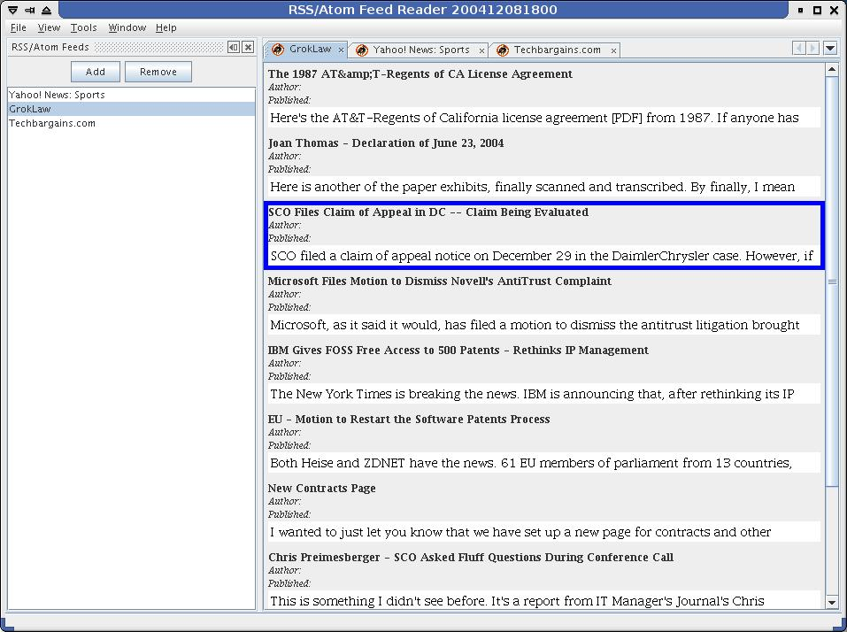
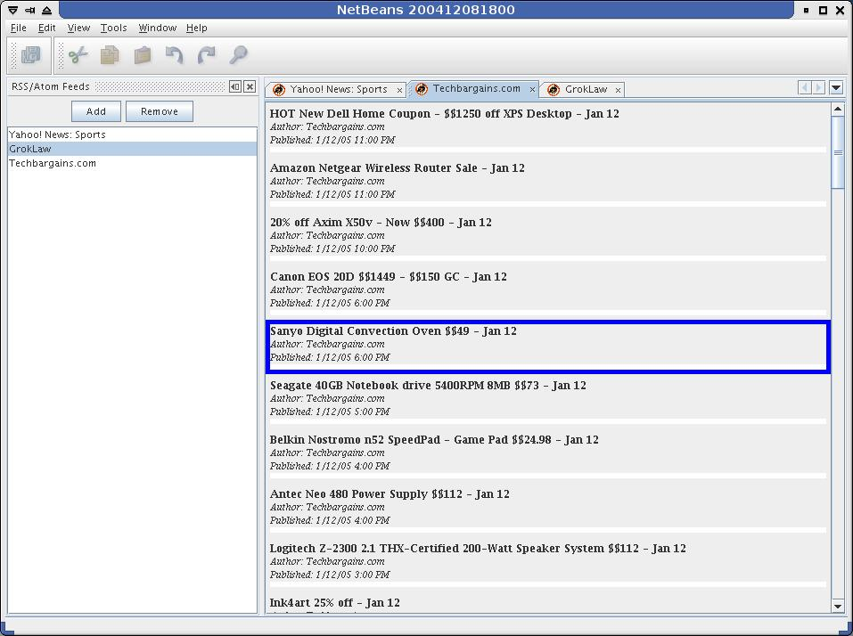

FeedReader 是基本 RSS/Atom 源浏览器，它以 Mozilla Firefox 的 Sage 插件为原型。其中包含：
源列表（rss/rdf/atom 描述符文件的 URL）
每个源中的标题列表
浏览器窗口（嵌入在 JFrame 中的 Mozilla）
嵌入的 Mozilla 框架是由 JDIC 库提供的，该库使用 JNI 调用。我将此示例配置为使用 Linux 和 Windows 版本的 JDIC 二进制文件。
当然啦，主要读者是希望在 NetBeans 平台上构建应用程序的用户。我会尽量详细说明如何创建 FeedReader，并解释清单文件、层文件以及 Java 源代码中的每一行执行的操作，尤其是我采取非常规方法的地方。
这是我编写本教程的第二个原因。这些非常规的方法都是从一个“魔法盒”中拿出来的：
您必须采取非常规的方法才能实现此目的。
对于所有此类情况，我将链接到 IssueZilla 中的相应未解决问题。希望这是一篇生动的文章，并且随着时间的推移不再使用这些非常规的方法，从而提供更容易创建应用程序的平台。
我提供了完整源代码。
就本教程而言，我并未假定使用任何特定的 IDE。事实上，我只是说您需要使用一个文本编辑器、JDK1.5.0（1.4.x 中的错误导致无法编译此样例，但它可以在 1.4.x 中运行）以及 Apache Ant1.6.2 或更高版本。为了简化我的命令行示例，我假设使用 bash（UNIX 或 Cygwin）。如果需要，请将其转换为 Windows 命令行。它同样可以正常工作。
我只是不希望将 NetBeans IDE 和NetBeans 平台混为一谈。请先按照本教程进行操作。了解模块的工作方式。然后考虑使用工具（如 NetBeans IDE）简化这些模块的生成过程。
您需要开始做的第一件事是获得 NetBeans 平台副本。您不需要通过源代码生成该平台。您只需下载一个二进制版本，然后将其解压缩到某个位置。我将其解压缩到 /home/rich/netbeans 中。
接下来，从一些示例源代码入手会很有帮助。我是从群集生成环境入手的。这是很方便的，因为它具有用于生成和打包模块的 Ant 生成脚本，并具有一个名为 "snipe" 的启动模块。当然啦，既然我已经编写了该模块，您可以同样方便地通过 FeedReader 源树开始创建您的应用程序。
我将我的环境解压缩到 /home/rich/src/rss 中。
最后，您需要配置生成脚本，以使这些脚本知道可以在哪里找到 NetBeans 平台安装：
修改 /home/rich/src/rss/nbbuild/user.build.properties 中的几行。
netbeans.dest.dir=/home/rich/netbeans clustername=rssreader1
按照惯例，将在结束时为群集分配版本号，但并不严格要求这样做。
定义：群集是一组模块和相关的资源文件。NetBeans 安装可以由一组群集组成，它们是在启动 NetBeans 时选择的。例如，NetBeans IDE 运行 platform4、ide4、nb4.0 和其他群集。群集的基本思想是，您可以让一个 NetBeans 平台安装以及许多标记的应用程序使用相同的群集。例如，我可以将 rssreader1 群集安装到 NetBeans IDE 安装中，并通过运行两个不同的启动脚本来获得 IDE 和 FeedReader。IDE 和 FeedReader 都使用 platform4 群集，但除此之外，它们是完全不同的应用程序。
接下来，修改 /home/rich/src/rss/nbbuild/user.cluster.properties 中的几行，以便将群集名称与我们刚才在 user.build.properties 中指定的内容保持同步：
user.cluster=cluster.rssreader1 cluster.rssreader1.dir=rssreader1 cluster.rssreader1= snipe
现在，我可以在 nbbuild/ 目录中运行 ant，并在 /home/rich/netbeans/rssreader1 目录中包含 snipe 模块。当然啦，我不需要使用 snipe 模块，因此，我随后键入 ant clean 以将其清除。
现在，该说说我们所需的模块了。
您可以将整个 FeedReader 应用程序捆绑到单个模块中。不过，这并不是完全模块化的。FeedReader 需要 JDOM、Rome 和 JDIC 库。如果您确实希望通过可能使用这些库的其他模块扩展该应用程序，最好仅依赖于库模块，而不是依赖于整个 FeedReader。此外，您还可以将库模块设置为自动装入。
定义：自动装入模块是指在（其他模块）需要时 NetBeans 自动装入的模块。在自动装入库模块之前，它不会在运行时占用任何内存。
只要添加新的模块，您就需要让生成环境知道这一点。修改两个文件。
/home/rich/src/rss/nbbuild/user.cluster.properties：
cluster.rssreader1=snipe, \
anothermodule, \
yetanother这会告诉生成脚本群集中包含哪些模块，以使它们知道如何将群集作为一个单元生成，以及将生成的 JAR 文件安装到哪个目录。
/home/rich/src/rss/nbbuild/modules.xml：
<module> <path>snipe</path> <cnb>org.netbeans.modules.snipe</cnb> </module>
这会将包含模块源代码的目录名称映射到在运行时向 Netbeans 显示的名称（"cnb" 表示代码名称库）。
我假设大多数读者都了解 JDOM 是什么。它是一个 XML 解析 API，FeedReader 需要该 API 的唯一原因是 Rome 库使用它。
先将 "jdom" 添加到群集列表中，
<module> <path>jdom</path> <cnb>org.jdom.api</cnb> </module>
然后将其添加到模块列表中。现在，下面给出了简化版的 JDOM 模块文件列表：
build.xml manifest.mf nbproject/project.xml nbproject/project.properties lib/jdom.jar src/org/jdom/api/Bundle.properties
让我们依次查看其中的每一条。
build.xml：该生成文件先导入另一个名为 projectized.xml 的生成文件。大多数时候，只需要在模块的生成文件中包含这些内容。不过，在 JDOM 模块中，除了模块自己的 jar 以外，您还希望在模块的包装中包含 jdom.jar。
非常规方法 1：您不必覆盖生成行为即可包含额外的库。您应该可以在 project.xml 文件中声明这些依赖关系，生成脚本应该知道如何创建相应的清单文件条目并将其包含在 nbm 文件中。
https://netbeans.org/bugzilla/show_bug.cgi?id=52354
因此，覆盖两个目标。"files-init" 目标是来自 projectized.xml 的目标的确切副本并添加了以下行：
<include name="${nb.modules.dir}/ext/jdom.jar"/>"files-init" 目标让生成脚本知道哪些文件属于该模块。在运行 "clean" 目标时，将删除这些文件。按照惯例，不是模块的 JAR 将放在 ext/ 目录中。
另一个需要覆盖的目标是 "netbeans-extra"。这是生成脚本提供的钩子，以便在部署过程中为您提供执行操作的位置，例如，复制文件。
<target name="netbeans-extra" depends="init">
<mkdir dir="${netbeans.dest.dir}/${cluster.dir}/${nb.modules.dir}/ext"/>
<copy todir="${netbeans.dest.dir}/${cluster.dir}/${nb.modules.dir}/ext">
<fileset dir="lib">
<include name="jdom.jar"/>
</fileset>
</copy>
</target>这会将 jdom.jar 文件复制到 /home/rich/netbeans/rssreader1/modules/ext 中。
manifest.mf：每个 JAR 文件需要一个清单文件。NetBeans 模块就是一个 JAR 文件，其清单文件至少包含以下两行：
OpenIDE-Module: org.jdom.api/1 OpenIDE-Module-Specification-Version: 1.0
第一行就是模块的名称，可以选择包含“发行版本”。请注意，此名称与 modules.xml 文件中的 <cnb>（代码名称库）相匹配。
第二行是模块的“规范版本”。
顺便提一下，一个模块可以具有三种不同的版本号：发行版本、规范版本和实现版本。
比方说，模块 A 具有发行版本 1、规范版本 2.0 和实现版本 beta3。现在，模块 B 将声明对模块 A 的依赖关系（在其 project.xml 文件中）。它必须指定发行版本 1。它可以选择指定对规范版本 2.0 的依赖关系。如果指定，并且 A 的作者发行了 2.1 版，没关系，依赖关系仍然有效。约定是模块 A 公开的公共 API 类（请参见 project.xml 的 <public-packages> 元素）不会破坏兼容性。对规范版本的依赖关系仅为 B 提供对这些 API 类的访问。
如果模块 B 指定对实现版本 beta3 的依赖关系，则它仅适用于该版本的模块 A。不过，它可以访问模块 A 中的所有公共类。（如果在运行模块时出现 NoClassDefFoundException，则可能是因为您尝试访问非 API 类而没有指定实现依赖关系。）
清单文件中仅包含两个额外的行：
OpenIDE-Module-Localizing-Bundle: org/jdom/api/Bundle.properties Class-Path: ext/jdom.jar
第一行是完全可选的。它指向包含更多清单文件条目的包。这些清单文件条目都是可本地化的字符串，例如，此模块的显示名称和说明。
第二行是标准清单文件 Class-Path 条目，它将 jdom.jar 文件放在模块的 JAR 文件的类路径中。请注意，路径 "ext/jdom.jar" 与将 build.xml 文件中的 jdom.jar 复制到的位置相匹配。
非常规方法 2：不必指定 Class-Path。它应该是自动生成的（请参见非常规方法 1）。
nbproject/project.xml：此文件告诉生成脚本和 IDE（如果使用）如何生成依赖关系声明和类路径。此处，您还必须指定熟悉的 <code-name-base> 和 <path> 信息。接下来，您必须指定对其他模块的任何依赖关系。现在，我们看到模块本身中好像没有实际代码，并且 jdom.jar 不需要在核心 JRE 类外部使用任何其他代码，因此，实际上不需要声明任何模块依赖关系。不过，应始终声明对核心 OpenAPI 类的依赖关系：
<dependency>
<code-name-base>org.openide</code-name-base>
<build-prerequisite/>
<compile-dependency/>
<run-dependency>
<release-version>1</release-version>
<specification-version>4.5</specification-version>
</run-dependency>
</dependency>这是一种特例。如果未使用最新的规范版本指定该模块，NetBeans 假定这是一个旧模块，并在运行时自动装入大量依赖关系以保持向后兼容。
接下来，您需要声明模块的 <public-packages>。它有两个用途：声明了对此模块的依赖关系的其他模块可以查看公共包，它们构成了包集合，这些包将获取在运行 "Javadoc" ant 目标时生成的 Javadoc。
您可以分别指定每个包：
<public-packages> <package>org.jdom</package> <package>org.jdom.adapters</package> <package>org.jdom.input</package> ... </public-packages>
或者，您可以使用下面的一行获取整个树：
<public-packages> <subpackages>org.jdom</subpackages> </public-packages>
不过，这种方法不适用于 "Javadoc" 目标。
project.properties：有关生成过程的一些额外提示...
is.autoload=true cp.extra=lib/jdom.jar module.javadoc.packages=org.jdom
第一行将此模块指定为“自动装入”模块。第二行将附加到编译类路径中。如果在 project.xml 中使用 <subpackages> 方法声明 <public-packages>，则需要使用第三行。
非常规方法 3：不必在此处指定 module.javadoc.packages。生成脚本应具有合理的回退机制，假设用户对此模块的 Javadoc 不感兴趣。现在，如果未指定该机制，生成过程将会失败。
https://netbeans.org/bugzilla/show_bug.cgi?id=52135
* 更新：NetBeans 4.1 中已修复
Rome 库读取 RSS 和 Atom 源（使用非常简单的 API，我可能会添加）。Rome 模块和 JDOM 模块仅在两个方面存在差异。Rome 模块捆绑了两个 JAR 文件（rome-0.4.jar 和 rome-fetcher-0.4.jar）而不是一个，并且 project.xml 声明对 JDOM 模块的依赖关系：
<dependency>
<code-name-base>org.jdom.api</code-name-base>
<build-prerequisite/>
<compile-dependency/>
<run-dependency>
<release-version>1</release-version>
<specification-version>1.0</specification-version>
</run-dependency>
</dependency>JDIC 库允许 Java 程序利用某些本机桌面工具，例如，浏览器、邮件程序、系统任务栏和 MIME 类型注册表。FeedReader 使用嵌入式本机浏览器组件，通过 IE 或 Mozilla 呈现引擎在 JFrame 中呈现 Web 页。
为了完成此操作，JDIC 对其共享库（jdic.dll 或 libjdic.so）进行 Java 本机接口 (JNI) 调用并运行本机可执行文件（IeEmbed.exe 或 mozembed-linux-gtk2）。您需要在模块的生成文件中进行一些小改动，以使 NetBeans 在运行时可以使用这些库和可执行文件。
请注意 "files-init" 任务中声明的一组文件：
<include name="${nb.modules.dir}/ext/jdic.jar"/>
<include name="lib/libjdic.so"/>
<include name="lib/libmozembed-linux-gtk1.2.so"/>
<include name="lib/libmozembed-linux-gtk2.so"/>
<include name="lib/mozembed-linux-gtk1.2"/>
<include name="lib/mozembed-linux-gtk2"/>
<include name="lib/jdic.dll"/>
<include name="lib/IeEmbed.exe"/>
<include name="lib/nspr4.dll"/>
<include name="bin/${shell.script}"/>
<include name="bin/${batch.script}"/>除了熟悉的 JAR 文件声明以外，lib/ 中还包含一些本机库和可执行文件以及两个脚本。决定将本机内容放在该特定目录中确实有一点武断，但这是体系结构文档中建议的位置。启动脚本是唯一需要知道此位置的其他对象。
shell 脚本和批处理脚本是生成文件的 shellscript 目标生成的。这些脚本使用位于相应路径中的 rssreader1 群集和 JDIC 二进制文件启动 NetBeans 平台。
现在，您已获得了所需的所有库模块，您可以开始创建实际执行某些操作的模块了。
先创建模块的生成脚本和声明元素。好在 build.xml 文件是空的，但标准 "projectized.xml" 的 import 行除外。nbproject/project.xml 文件仅声明对 3 个库模块的依赖关系，而没有公共包（此模块没有提供其他模块的 API）。nbproject/project.properties 文件也是空的。manifest.mf 文件看起来也应该很熟悉。其中只有一个新元素：
OpenIDE-Module-Layer: org/netbeans/modules/feedreader/resources/layer.xml
与库模块不同，将在层文件中声明有关 FeedReader 用户界面的内容以包含在“系统文件系统”中。
定义：系统文件系统是 NetBeans 存储所有系统设置、GUI 布局信息、操作、模板以及保持 NetBeans 安装状态所需的任何其他设置的位置。它由位于每个群集的 "config" 目录中的实际文件、NetBeans 用户目录的 "config" 目录以及模块层文件中声明的虚拟“文件”组成。
第一个条目位于名为 Actions 的顶层文件夹中。这是 javax.swing.Action 实现的资源库。可以将其用于菜单项、工具栏按钮以及快捷键。通过添加此条目，用户可以从菜单中选择 "Tools ... Keyboard Shortcuts"（工具 ... 快捷键）以将快捷键分配给 ViewFeedsAction。
第二个条目将 ViewFeedsAction 放在 "View"（视图）菜单下面。请注意阴影文件语法，它与 UNIX 中的软链接或 Windows 中的快捷方式类似。
其余条目均位于 Windows2 顶层文件夹中。该文件夹为平台提供有关要实例化的 TopComponent 类型及其放置位置的信息。（顺便说一下，之所以称为 "Windows2" 是因为，"Windows" 指的是 3.6 之前的旧窗口系统，这样做是为了保持向后兼容。）FeedReader 包含两个 TopComponent 定义：SiteListComponent 和 EntryListComponent。后者是在缺省位置（中心）打开的，因此，不需要在层文件中指定任何设置以覆盖此行为。
不过，SiteListComponent 将停靠在左侧（即处于“资源管理器”模式）。因此，需要添加一个条目：
<folder name="Modes">
<folder name="explorer">
<file name="rss_list.wstcref" url="feedList.wstcref"/>
</folder>
</folder>它声明具有 ID "rss_list" 的 TopComponent 将缺省在“资源管理器”模式下停靠。（顺便说一句，扩展名 "wstcref" 表示“窗口系统顶层组件引用”。）声明的模式下的 "rss_list" 位置是从 feedList.wstcref 文件派生的：
<tc-ref version="2.0">
<module name="org.netbeans.modules.feedreader/1" spec="1.0" />
<tc-id id="rss_list" />
<state opened="true" />
</tc-ref><tc-id id> 值必须与层文件中声明的文件基名 ("rss_list") 相匹配。具有 ".settings" 扩展名的 Windows2/Components 文件夹中也必须包含相同的名称：
<folder name="Components">
<file name="rss_list.settings" url="feedList.settings" />
</folder>设置文件内容将告诉 NetBeans 如何实例化 "rss_list"。您可以手工编写此文件的内容，也可以注释掉该层文件的整个 Windows2 部分，启动 Netbeans，运行 ViewFeedsAction 以实例化 SiteListComponent，然后获取在 $userdir/config/Windows2Local/Component 中自动生成的设置文件。接下来，将 <serialdata> 部分替换为：
<instance class="org.netbeans.modules.feedreader.SiteListComponent"/>
这会使用 SiteListComponent 的缺省构造函数创建组件。如果类需要静态工厂方法，您可以添加一个方法属性：
<instance class="org.netbeans.modules.feedreader.SiteListComponent" method=”makeSiteListComponent”/>
现在，剩下要做的就是实际 Java 代码了。层文件中声明的第一个类是 ViewFeedsAction.java。这是一个简单的 CallableSystemAction 子类，它是 javax.swing.Action 的单一实现。
public void performAction() {
SiteListComponent.activate();
}在执行此操作时，将打开单一 SiteListComponent 实例并为其提供焦点（请参见下面的 SiteListComponent 实现）。
public String getName() {
return NbBundle.getMessage(SiteListComponent.class, "SLC_title");
}操作名称存储在 Bundle.properties 中，因此，可以对其进行本地化。
public HelpCtx getHelpCtx() {
return HelpCtx.DEFAULT_HELP;
}如果您知道 JavaHelp ID 或具有此操作的更具体帮助的 URL，则可以更改此名称。
protected boolean asynchronous() {
return false;
}有关更多详细信息，请参见 Javadoc 条目。
非常规方法 4：此类中的一些容易混淆的代码（处理 ID 的内容）是为了确保 SiteListComponent 实例是单一的，它具有在层文件中指定的 ID。理想情况下，应该有一个名称类似于 SingletonTopComponent 的 TopComponent 子类，因为人们通常都会这样做。
https://netbeans.org/bugzilla/show_bug.cgi?id=53252
以下代码确保实例是单一的：
/** A hint to the window system for generating a unique id */
private static final String PREFERRED_ID = "rss_list"; // NOI18N
/** The actual id of the (singleton) instance */
private static String s_id = PREFERRED_ID;
...
public static synchronized SiteListComponent getInstance()
{
TopComponent c;
c = WindowManager.getDefault().findTopComponent(s_id);
if (c == null)
{
c = new SiteListComponent();
s_id = WindowManager.getDefault().findTopComponentID(c);
}
return (SiteListComponent)c;
}
...
protected String preferredID() {
return PREFERRED_ID;
}NetBeans 保留当前在内存中的所有 TopComponent 的映射。此映射的关键就是我所说的 "ID"。“首选”ID 只是在创建新实例时对使用的窗口系统的提示。不保证此提示会执行任何操作。如果您仔细查看 $userdir/config/Windows2Local 内容以跟踪问题，这通常是非常有用的，因为您可以识别组件的名称。
不过，静态字段 s_id 表示内存中的 SiteListComponent 的一个实例的 ID。它缺省为 "rss_list'，因为这是 feedList.wstcref 中提供的 ID 值。因此，如果这是用户第一次使用该模块，则会以声明方式实例化具有 ID "rss_list" 的组件。不过，如果用户关闭了该组件，重新启动 NetBeans，然后调用 ViewFeedsAction，新组件可能具有不同的 ID。这就是为什么 getInstance() 方法可能为 s_id 分配新的值。
如果 ID 发生变化，层文件中没有任何设置要求新组件在“资源管理器”模式下停靠。要强制执行此操作，请覆盖 open() 方法：
private static final String MODE = "explorer"; // NOI18N
public void open()
{
Mode m = WindowManager.getDefault().findMode(MODE);
m.dockInto(this);
super.open();
}该类的其余部分并不是 NetBeans 特定的。组件包含一个 JList 和两个按钮：一个按钮用于添加新的源，另一个按钮用于删除选定的源。该列表受 SiteListModel 支持。
SiteListModel 类仅将序列化添加到 swing DefaultListModel 中。在构造后，它从硬盘中装入源列表。它使用每次编辑的列表内容更新硬盘上的列表。（这会不会产生很大的工作量？也许会，但它不是一个很长的列表，而且在用户设置一次该列表后，很少会对其进行编辑。）
重点是确定对列表进行序列化的位置。通过将其放在系统文件系统中，您可以将序列化的文件作为 $userdir/config 中的文件结构的一部分：
private static final String DIR = "FeedReader"; //NOI18N
private static final String FILENAME = "feeds.ser"; //NOI18N
private FileObject getSerializedFile(boolean create) throws IOException
{
FileSystem sysFs = Repository.getDefault().getDefaultFileSystem();
FileObject dir = sysFs.findResource(DIR);
if (dir == null)
{
if (create)
dir = sysFs.getRoot().createFolder(DIR);
else
return null;
}
FileObject fo = dir.getFileObject(FILENAME);
if (fo == null)
{
if (create)
fo = dir.createData(FILENAME);
else
return null;
}
return fo;
}布尔参数 create 确定是否创建该文件（如果不存在），true 表示写入，false 表示读取。
因此，序列化的列表将最终位于 $userdir/config/FeedReader/feeds.ser 中。
这是一种比较低级的源列表写出方法。事实上，可以使用 NetBeans API 完成某些工作。可通过创建 SystemOption 子类并仅覆盖 readExternal() 和 writeExternal() 来实现序列化。我选择直接写入到系统文件系统中，以使您更好地了解它的基本原理。此外，此实现提供了更大的灵活性，您可以使用不同的文件格式。在从 getSerializedFile() 中返回 FileObject 后，您可以将 XML 数据写入到其中，就像使用 ObjectOutputStream 一样方便。
该类定义了一个组件，它在中心位置打开（即“编辑器”模式）并包含单个源中的新闻内容列表。
public class EntryListComponent extends TopComponent
{
protected static final String PREFERRED_ID = "rss_entry_list"; //NOI18N
protected String preferredID() {
return PREFERRED_ID;
} 该类中没有任何与 ID 有关的反常内容。它们只是作为对窗口系统的提示。
public static TopComponent getInstance(Feed feed)
{
// look for an open instance containing this feed
Iterator opened = TopComponent.getRegistry().getOpened().iterator();
while (opened.hasNext())
{
Object tc = opened.next();
if (tc instanceof EntryListComponent)
{
EntryListComponent elc = (EntryListComponent)tc;
if (feed.equals(elc.m_feed))
{
elc.initData(feed);
return elc;
}
}
}
// none found, make a new one
return new EntryListComponent(feed);
}getInstance() 方法确保每个唯一的源只存在一个实例。因此，可以同时打开几个标签，但每个源 URL 只有一个标签。
protected EntryListComponent(Feed feed)
{
super();
initComponents();
if (feed != null)
initData(feed);
}将构造函数指定为受保护的函数，因此，客户端必须使用 getInstance()。
protected void initData(Feed feed)
{
m_list.setFeed(feed);
setDisplayName(feed.toString());
m_feed = feed;
}为 JList 提供源并设置显示名称，将在组件标签以及窗口菜单等位置中使用该名称。
public int getPersistenceType() {
return PERSISTENCE_NEVER;
}在关闭 Netbeans 时，最好不要序列化这些组件。
这些类不包含很多 NetBeans 特定的代码。我将使用代码中的注释加以说明。
在 nbbuild/ 目录中，运行 ant，然后运行 /home/rich/netbeans/rssreader1/bin/rss-reader.sh（或在 Windows 上运行 rss-reader.bat）。现在，您应该会在左侧看到一个空列表，您可以将源 URL 添加到其中。

FeedReader 正常工作！只有一处有错误。它仍然看起来像将 RSS 功能贴到 NetBeans 上。有些工具栏按钮和菜单项不能用于 RSS 阅读。
FeedReader 的标记模块是一个非常简单的模块。根本没有 Java 代码。只有一个层文件，它将一些未使用的工具栏和菜单项隐藏起来：
<folder name="Toolbars">
<folder name="File_hidden"/>
<folder name="Edit_hidden"/>
</folder>
<folder name="Menu">
<folder name="File">
<file name="org-openide-actions-SaveAction.instance_hidden"/>
<file name="org-openide-actions-SaveAllAction.instance_hidden"/>
<file name="org-netbeans-core-actions-RefreshAllFilesystemsAction.instance_hidden"/>
<file name="org-openide-actions-PageSetupAction.instance_hidden"/>
<file name="org-openide-actions-PrintAction.instance_hidden"/>
</folder>
<folder name="Edit_hidden"/>
<folder name="View">
<!-- hide the default web browser that doesn't render stuff very well -->
<file name="org-netbeans-core-actions-HTMLViewAction.instance_hidden"/>
</folder>
<folder name="Window">
<file name="org-netbeans-core-actions-GlobalPropertiesAction.instance_hidden"/>
</folder>
</folder>我敢肯定您一定在想一个问题，“如何知道要隐藏的所有这些文件的名称？”这的确不是显而易见的，要隐藏 "File ... Save"（文件 ... 保存）菜单项，您需要指定 <file name="org-openide-actions-SaveAction.instance_hidden"/>。可以使用两种方法。您可以在 NetBeans 源代码中搜索以查找最初声明它的层文件。或者，您也可以使用 Bean 浏览器，这是 NetBeans 更新中心上的 "Open APIs Support"（Open API 支持）(org-netbeans-modules-apisupport) 模块中包含的一个工具。这会在 "Windows...Runtime"（Windows ... 运行时）窗口中创建一个名为“Bean 浏览器”的节点，用于浏览系统文件系统。
这是一个非常有用的小工具。
除了层文件以外，标记模块还有一处不同寻常的地方。在生成脚本中，您将看到一个非常熟悉的部分，它将资源文件添加到部署的文件集中：
<!--
Identifies all the files to be considered part of this module when deployed
-->
<target name="files-init" depends="basic-init">
<patternset id="module.files">
<include name="${module.jar}"/>
<include name="${javahelp.jar}" if="has.javahelp"/>
<include name="${nb.system.dir}/Modules/${code.name.base.dashes}.xml"/>
<!-- additions for FeedReader begin here -->
<include name="${nb.lib.dir}/locale/core_rss.jar"/>
<include name="${nb.modules.dir}/locale/org-netbeans-core-windows_rss.jar"/>
</patternset>
</target>
<!--
netbeans-extra is a hook provided to plug in file copying.
-->
<target name="netbeans-extra" depends="init">
<mkdir dir="${netbeans.dest.dir}/${cluster.dir}/${nb.lib.dir}/locale"/>
<mkdir dir="${netbeans.dest.dir}/${cluster.dir}/${nb.modules.dir}/locale"/>
<jar destfile="${netbeans.dest.dir}/${cluster.dir}/${nb.lib.dir}/locale/core_rss.jar"
basedir="core"/>
<jar destfile="${netbeans.dest.dir}/${cluster.dir}/${nb.modules.dir}/locale/org-netbeans-core-windows_rss.jar"
basedir="core-windows"/>
</target>此处，您将添加两个 JAR 文件：core_rss.jar 和 org-netbeans-core-windows_rss.jar。这些 JAR 对应于 core.jar 和 org-netbeans-core-windows.jar。事实上，可以使用以下方法“标记”标准 NetBeans 安装中的任何 JAR，即，在原文件的相对路径中放置另一个 JAR：
/path/to/original.jar /path/to/locale/original_brandname.jar
回想一下，JDIC 模块中的 shell 脚本将 "–branding rss" 作为参数传递。因此，此处的 "brandname" 是 "rss"。
几乎所有资源文件都可以进行标记。图标、包、层文件，等等。在 core_rss.jar 中，我标记了闪屏和资源包，后者包含影响如何显示闪屏的键。在 org-netbeans-core-windows_rss.jar 中，我只标记了一个包以覆盖主标题栏的文本。
现在，您看到的屏幕应该类似于本文开头的屏幕快照。现在，您了解了如何为 NetBeans 平台编写实际应用程序。
请将问题直接发送到 dev@openide.netbeans.org 邮件列表。有关 Netbeans 邮件列表的信息，请访问 https://netbeans.org/community/lists/top.html。